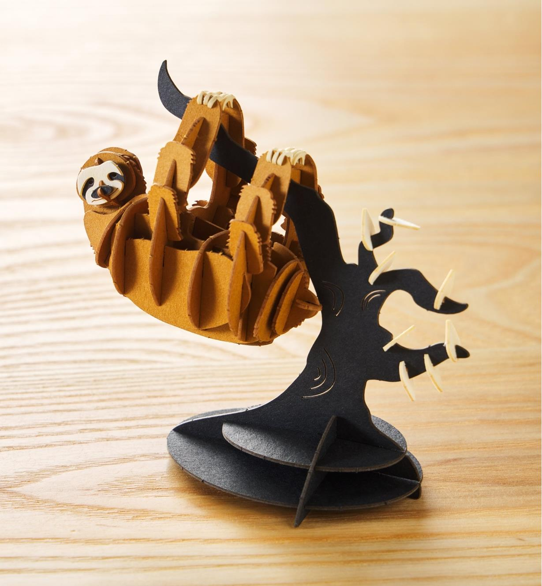
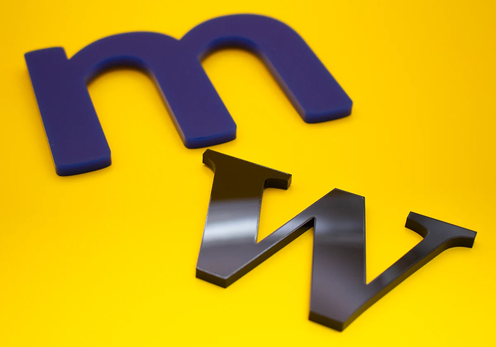
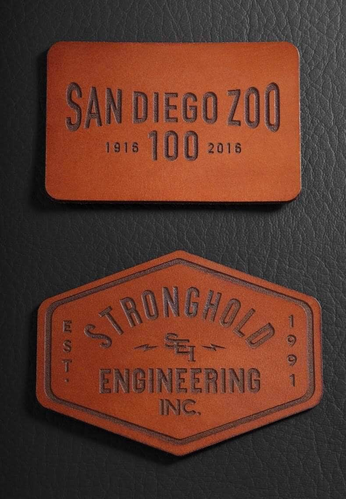
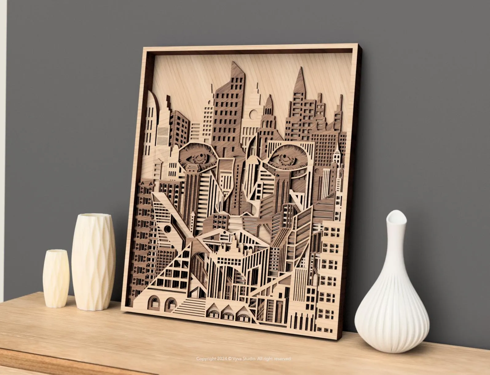
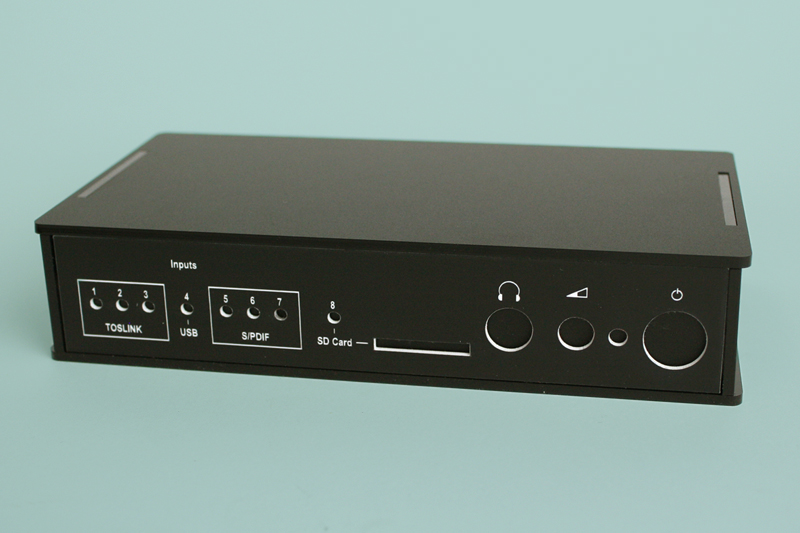
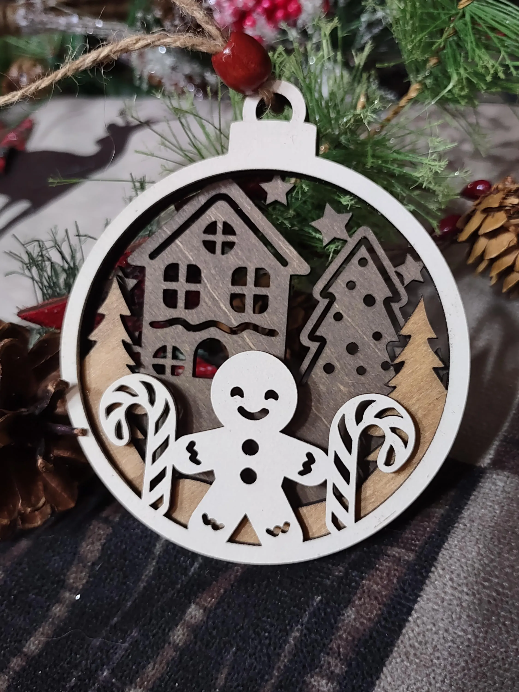

Laser cutting and engraving combine microscopic precision, razor-sharp edge quality, and rapid production times for custom wood fabrication, acrylic displays, and branded leather goods. Utilizing both high-power diode and advanced CO₂ laser systems guided by precise digital toolpaths, our shop vaporizes or etches material with pinpoint accuracy. This automated process enables complex interlocking joinery, delicate geometric patterns, and flawless repeatability across every production run.
Beyond clean vector profiling, our laser systems perform high-resolution raster engraving to burn detailed photography, company logos, serial tags, and custom artwork onto organic and synthetic substrates. Whether you need custom business signage, architectural prototypes, personalized gifts, or custom enclosure panels, MultiFab Studio bridges digital CAD concepts with real-world physical craftsmanship.
We utilize a versatile lineup of laser systems calibrated for everything from fine diode etching to heavy-duty CO₂ cutting.
| Machine Model | Capabilities | Working Area | Primary Use |
|---|---|---|---|
| Bambu Lab R1 | 55W Desktop CO₂ Laser with Auto-Alignment and TriSense | 600mm x 300mm | Deep wood cutting, thick clear acrylic, large production runs, and rapid engraving |
| Elegoo Phecda 10W | Diode laser vector profiling and high-resolution raster engraving | 400mm x 400mm | Detailed surface etching, leather patches, and small-format wood work |
Laser manufacturing depends heavily on thermal absorption, substrate density, and surface reflection. We calibrate our 55W CO₂ and 10W diode systems to deliver clean edge profiles with zero scorching.
A small sample of the possibilities of what our laser shop can do!

Intricate Interlocking Wood Design

Polished Edge Acrylic Signage

Custom Branded Leather Patch

Layered Architectural Wood Model

Engraved Electronic Enclosure Panel

Seasonal Laser Cut Ornaments
Quick answers to common questions before starting your laser cutting project.
We prefer vector files such as SVG, DXF, AI, or PDF. For raster engraving projects, high-resolution PNG or JPG images work best.
Yes! Please convert all text to paths, curves, or outlines in your vector software before submitting your file to prevent font substitution errors.
Our 55W CO₂ system can cleanly cut up to 20mm acrylic and thick hardwoods in a single pass, while our diode system handles lighter materials like thin plywood and cardstock.
Absolutely! We can process high-contrast raster images and grayscale graphics to burn realistic portraits, logos, and artwork onto wood and leather.
Yes, we offer custom vector design and layout optimization in case your sketches or ideas need to be converted into a clean, laser-ready cutting file.